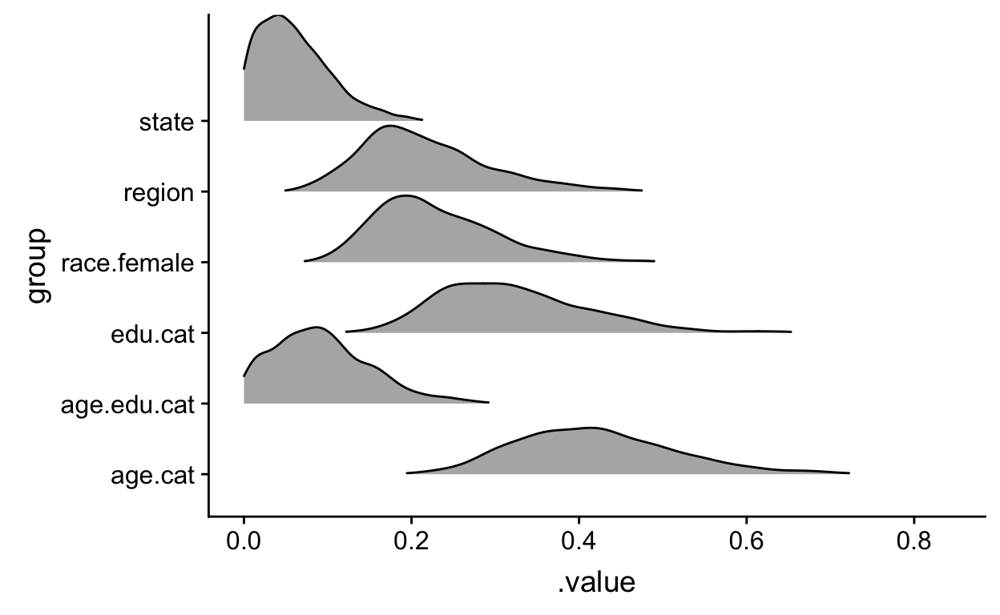

This post explores MRP using brms and tidyverse modeling.
This blogpost is a reproduction of this. Multi-level regression with post-stratification (MRP) is one of the more powerful predictive strategies for opinion polling and election forecasting. It combines the power of multi-level modeling which anticipate and predict group and population level effects which have good small N predictive properties with post-stratification which helps to temper the predictions to the demographics or other variables of interest. This method has been put out by Andrew Gelman et al and there is a good deal of literature on the subject.
This blog post then seeks to reproduce an example made by Tim Mastny using the brms package and tidyverse tooling.
library(tidyverse)
library(lme4)
library(brms)
library(rstan)
devtools::install_github("hrbrmstr/albersusa")
library(albersusa)
library(cowplot)
rstan_options(auto_write=TRUE)
options(mc.cores=parallel::detectCores())All the data required to reproduce this example is located here
marriage.data <- foreign::read.dta('gay_marriage_megapoll.dta',
convert.underscore=TRUE)
Statelevel <- foreign::read.dta("state_level_update.dta",
convert.underscore = TRUE)
Census <- foreign::read.dta("poststratification 2000.dta",
convert.underscore = TRUE)In this section the data are being cleaned
# add state level predictors to marriage.data
Statelevel <- Statelevel %>% rename(state = sstate)
marriage.data <- Statelevel %>%
select(state, p.evang, p.mormon, kerry.04) %>%
right_join(marriage.data)
# Combine demographic groups
marriage.data <- marriage.data %>%
mutate(race.female = (female * 3) + race.wbh) %>%
mutate(age.edu.cat = 4 * (age.cat - 1) + edu.cat) %>%
mutate(p.relig = p.evang + p.mormon) %>%
filter(state != "")In this step Tim is
# change column names for natural join with marriage.data
Census <- Census %>%
rename(state = cstate,
age.cat = cage.cat,
edu.cat = cedu.cat,
region = cregion)
Census <- Statelevel %>%
select(state, p.evang, p.mormon, kerry.04) %>%
right_join(Census)
Census <- Census %>%
mutate(race.female = (cfemale * 3 ) + crace.WBH) %>%
mutate(age.edu.cat = 4 * (age.cat - 1) + edu.cat) %>%
mutate(p.relig = p.evang + p.mormon)Now the fully Bayesian model can be built with the associated group level effects specified.
bayes.mod <- brm(yes.of.all ~ (1 | race.female) + (1 | age.cat) + (1 | edu.cat)
+ (1 | age.edu.cat) + (1 | state) + (1 | region)
+ p.relig + kerry.04,
data = marriage.data, family = bernoulli(),
prior = c(
set_prior("normal(0,0.2)", class = "b"),
set_prior("normal(0,0.2)", class = "sd", group = "race.female"),
set_prior("normal(0,0.2)", class = "sd", group = "age.cat"),
set_prior("normal(0,0.2)", class = "sd", group = "edu.cat"),
set_prior("normal(0,0.2)", class = "sd", group = "age.edu.cat"),
set_prior("normal(0,0.2)", class = "sd", group = "state"),
set_prior("normal(0,0.2)", class = "sd", group = "region")
), iter = 1000, chains = 2, cores = 2, silent = TRUE
)
In file included from file1d5d763e1d16.cpp:8:
In file included from /Library/Frameworks/R.framework/Versions/3.5/Resources/library/StanHeaders/include/src/stan/model/model_header.hpp:4:
In file included from /Library/Frameworks/R.framework/Versions/3.5/Resources/library/StanHeaders/include/stan/math.hpp:4:
In file included from /Library/Frameworks/R.framework/Versions/3.5/Resources/library/StanHeaders/include/stan/math/rev/mat.hpp:4:
In file included from /Library/Frameworks/R.framework/Versions/3.5/Resources/library/StanHeaders/include/stan/math/rev/core.hpp:14:
In file included from /Library/Frameworks/R.framework/Versions/3.5/Resources/library/StanHeaders/include/stan/math/rev/core/matrix_vari.hpp:4:
In file included from /Library/Frameworks/R.framework/Versions/3.5/Resources/library/StanHeaders/include/stan/math/rev/mat/fun/Eigen_NumTraits.hpp:4:
In file included from /Library/Frameworks/R.framework/Versions/3.5/Resources/library/StanHeaders/include/stan/math/prim/mat/fun/Eigen.hpp:4:
In file included from /Library/Frameworks/R.framework/Versions/3.5/Resources/library/RcppEigen/include/Eigen/Dense:1:
In file included from /Library/Frameworks/R.framework/Versions/3.5/Resources/library/RcppEigen/include/Eigen/Core:531:
/Library/Frameworks/R.framework/Versions/3.5/Resources/library/RcppEigen/include/Eigen/src/Core/util/ReenableStupidWarnings.h:10:30: warning: pragma diagnostic pop could not pop, no matching push [-Wunknown-pragmas]
#pragma clang diagnostic pop
^
In file included from file1d5d763e1d16.cpp:8:
In file included from /Library/Frameworks/R.framework/Versions/3.5/Resources/library/StanHeaders/include/src/stan/model/model_header.hpp:4:
In file included from /Library/Frameworks/R.framework/Versions/3.5/Resources/library/StanHeaders/include/stan/math.hpp:4:
In file included from /Library/Frameworks/R.framework/Versions/3.5/Resources/library/StanHeaders/include/stan/math/rev/mat.hpp:4:
In file included from /Library/Frameworks/R.framework/Versions/3.5/Resources/library/StanHeaders/include/stan/math/rev/core.hpp:14:
In file included from /Library/Frameworks/R.framework/Versions/3.5/Resources/library/StanHeaders/include/stan/math/rev/core/matrix_vari.hpp:4:
In file included from /Library/Frameworks/R.framework/Versions/3.5/Resources/library/StanHeaders/include/stan/math/rev/mat/fun/Eigen_NumTraits.hpp:4:
In file included from /Library/Frameworks/R.framework/Versions/3.5/Resources/library/StanHeaders/include/stan/math/prim/mat/fun/Eigen.hpp:4:
In file included from /Library/Frameworks/R.framework/Versions/3.5/Resources/library/RcppEigen/include/Eigen/Dense:2:
In file included from /Library/Frameworks/R.framework/Versions/3.5/Resources/library/RcppEigen/include/Eigen/LU:47:
/Library/Frameworks/R.framework/Versions/3.5/Resources/library/RcppEigen/include/Eigen/src/Core/util/ReenableStupidWarnings.h:10:30: warning: pragma diagnostic pop could not pop, no matching push [-Wunknown-pragmas]
#pragma clang diagnostic pop
^
In file included from file1d5d763e1d16.cpp:8:
In file included from /Library/Frameworks/R.framework/Versions/3.5/Resources/library/StanHeaders/include/src/stan/model/model_header.hpp:4:
In file included from /Library/Frameworks/R.framework/Versions/3.5/Resources/library/StanHeaders/include/stan/math.hpp:4:
In file included from /Library/Frameworks/R.framework/Versions/3.5/Resources/library/StanHeaders/include/stan/math/rev/mat.hpp:4:
In file included from /Library/Frameworks/R.framework/Versions/3.5/Resources/library/StanHeaders/include/stan/math/rev/core.hpp:14:
In file included from /Library/Frameworks/R.framework/Versions/3.5/Resources/library/StanHeaders/include/stan/math/rev/core/matrix_vari.hpp:4:
In file included from /Library/Frameworks/R.framework/Versions/3.5/Resources/library/StanHeaders/include/stan/math/rev/mat/fun/Eigen_NumTraits.hpp:4:
In file included from /Library/Frameworks/R.framework/Versions/3.5/Resources/library/StanHeaders/include/stan/math/prim/mat/fun/Eigen.hpp:4:
In file included from /Library/Frameworks/R.framework/Versions/3.5/Resources/library/RcppEigen/include/Eigen/Dense:3:
In file included from /Library/Frameworks/R.framework/Versions/3.5/Resources/library/RcppEigen/include/Eigen/Cholesky:12:
In file included from /Library/Frameworks/R.framework/Versions/3.5/Resources/library/RcppEigen/include/Eigen/Jacobi:29:
/Library/Frameworks/R.framework/Versions/3.5/Resources/library/RcppEigen/include/Eigen/src/Core/util/ReenableStupidWarnings.h:10:30: warning: pragma diagnostic pop could not pop, no matching push [-Wunknown-pragmas]
#pragma clang diagnostic pop
^
In file included from file1d5d763e1d16.cpp:8:
In file included from /Library/Frameworks/R.framework/Versions/3.5/Resources/library/StanHeaders/include/src/stan/model/model_header.hpp:4:
In file included from /Library/Frameworks/R.framework/Versions/3.5/Resources/library/StanHeaders/include/stan/math.hpp:4:
In file included from /Library/Frameworks/R.framework/Versions/3.5/Resources/library/StanHeaders/include/stan/math/rev/mat.hpp:4:
In file included from /Library/Frameworks/R.framework/Versions/3.5/Resources/library/StanHeaders/include/stan/math/rev/core.hpp:14:
In file included from /Library/Frameworks/R.framework/Versions/3.5/Resources/library/StanHeaders/include/stan/math/rev/core/matrix_vari.hpp:4:
In file included from /Library/Frameworks/R.framework/Versions/3.5/Resources/library/StanHeaders/include/stan/math/rev/mat/fun/Eigen_NumTraits.hpp:4:
In file included from /Library/Frameworks/R.framework/Versions/3.5/Resources/library/StanHeaders/include/stan/math/prim/mat/fun/Eigen.hpp:4:
In file included from /Library/Frameworks/R.framework/Versions/3.5/Resources/library/RcppEigen/include/Eigen/Dense:3:
In file included from /Library/Frameworks/R.framework/Versions/3.5/Resources/library/RcppEigen/include/Eigen/Cholesky:43:
/Library/Frameworks/R.framework/Versions/3.5/Resources/library/RcppEigen/include/Eigen/src/Core/util/ReenableStupidWarnings.h:10:30: warning: pragma diagnostic pop could not pop, no matching push [-Wunknown-pragmas]
#pragma clang diagnostic pop
^
In file included from file1d5d763e1d16.cpp:8:
In file included from /Library/Frameworks/R.framework/Versions/3.5/Resources/library/StanHeaders/include/src/stan/model/model_header.hpp:4:
In file included from /Library/Frameworks/R.framework/Versions/3.5/Resources/library/StanHeaders/include/stan/math.hpp:4:
In file included from /Library/Frameworks/R.framework/Versions/3.5/Resources/library/StanHeaders/include/stan/math/rev/mat.hpp:4:
In file included from /Library/Frameworks/R.framework/Versions/3.5/Resources/library/StanHeaders/include/stan/math/rev/core.hpp:14:
In file included from /Library/Frameworks/R.framework/Versions/3.5/Resources/library/StanHeaders/include/stan/math/rev/core/matrix_vari.hpp:4:
In file included from /Library/Frameworks/R.framework/Versions/3.5/Resources/library/StanHeaders/include/stan/math/rev/mat/fun/Eigen_NumTraits.hpp:4:
In file included from /Library/Frameworks/R.framework/Versions/3.5/Resources/library/StanHeaders/include/stan/math/prim/mat/fun/Eigen.hpp:4:
In file included from /Library/Frameworks/R.framework/Versions/3.5/Resources/library/RcppEigen/include/Eigen/Dense:4:
In file included from /Library/Frameworks/R.framework/Versions/3.5/Resources/library/RcppEigen/include/Eigen/QR:17:
In file included from /Library/Frameworks/R.framework/Versions/3.5/Resources/library/RcppEigen/include/Eigen/Householder:27:
/Library/Frameworks/R.framework/Versions/3.5/Resources/library/RcppEigen/include/Eigen/src/Core/util/ReenableStupidWarnings.h:10:30: warning: pragma diagnostic pop could not pop, no matching push [-Wunknown-pragmas]
#pragma clang diagnostic pop
^
In file included from file1d5d763e1d16.cpp:8:
In file included from /Library/Frameworks/R.framework/Versions/3.5/Resources/library/StanHeaders/include/src/stan/model/model_header.hpp:4:
In file included from /Library/Frameworks/R.framework/Versions/3.5/Resources/library/StanHeaders/include/stan/math.hpp:4:
In file included from /Library/Frameworks/R.framework/Versions/3.5/Resources/library/StanHeaders/include/stan/math/rev/mat.hpp:4:
In file included from /Library/Frameworks/R.framework/Versions/3.5/Resources/library/StanHeaders/include/stan/math/rev/core.hpp:14:
In file included from /Library/Frameworks/R.framework/Versions/3.5/Resources/library/StanHeaders/include/stan/math/rev/core/matrix_vari.hpp:4:
In file included from /Library/Frameworks/R.framework/Versions/3.5/Resources/library/StanHeaders/include/stan/math/rev/mat/fun/Eigen_NumTraits.hpp:4:
In file included from /Library/Frameworks/R.framework/Versions/3.5/Resources/library/StanHeaders/include/stan/math/prim/mat/fun/Eigen.hpp:4:
In file included from /Library/Frameworks/R.framework/Versions/3.5/Resources/library/RcppEigen/include/Eigen/Dense:5:
In file included from /Library/Frameworks/R.framework/Versions/3.5/Resources/library/RcppEigen/include/Eigen/SVD:48:
/Library/Frameworks/R.framework/Versions/3.5/Resources/library/RcppEigen/include/Eigen/src/Core/util/ReenableStupidWarnings.h:10:30: warning: pragma diagnostic pop could not pop, no matching push [-Wunknown-pragmas]
#pragma clang diagnostic pop
^
In file included from file1d5d763e1d16.cpp:8:
In file included from /Library/Frameworks/R.framework/Versions/3.5/Resources/library/StanHeaders/include/src/stan/model/model_header.hpp:4:
In file included from /Library/Frameworks/R.framework/Versions/3.5/Resources/library/StanHeaders/include/stan/math.hpp:4:
In file included from /Library/Frameworks/R.framework/Versions/3.5/Resources/library/StanHeaders/include/stan/math/rev/mat.hpp:4:
In file included from /Library/Frameworks/R.framework/Versions/3.5/Resources/library/StanHeaders/include/stan/math/rev/core.hpp:14:
In file included from /Library/Frameworks/R.framework/Versions/3.5/Resources/library/StanHeaders/include/stan/math/rev/core/matrix_vari.hpp:4:
In file included from /Library/Frameworks/R.framework/Versions/3.5/Resources/library/StanHeaders/include/stan/math/rev/mat/fun/Eigen_NumTraits.hpp:4:
In file included from /Library/Frameworks/R.framework/Versions/3.5/Resources/library/StanHeaders/include/stan/math/prim/mat/fun/Eigen.hpp:4:
In file included from /Library/Frameworks/R.framework/Versions/3.5/Resources/library/RcppEigen/include/Eigen/Dense:6:
In file included from /Library/Frameworks/R.framework/Versions/3.5/Resources/library/RcppEigen/include/Eigen/Geometry:58:
/Library/Frameworks/R.framework/Versions/3.5/Resources/library/RcppEigen/include/Eigen/src/Core/util/ReenableStupidWarnings.h:10:30: warning: pragma diagnostic pop could not pop, no matching push [-Wunknown-pragmas]
#pragma clang diagnostic pop
^
In file included from file1d5d763e1d16.cpp:8:
In file included from /Library/Frameworks/R.framework/Versions/3.5/Resources/library/StanHeaders/include/src/stan/model/model_header.hpp:4:
In file included from /Library/Frameworks/R.framework/Versions/3.5/Resources/library/StanHeaders/include/stan/math.hpp:4:
In file included from /Library/Frameworks/R.framework/Versions/3.5/Resources/library/StanHeaders/include/stan/math/rev/mat.hpp:4:
In file included from /Library/Frameworks/R.framework/Versions/3.5/Resources/library/StanHeaders/include/stan/math/rev/core.hpp:14:
In file included from /Library/Frameworks/R.framework/Versions/3.5/Resources/library/StanHeaders/include/stan/math/rev/core/matrix_vari.hpp:4:
In file included from /Library/Frameworks/R.framework/Versions/3.5/Resources/library/StanHeaders/include/stan/math/rev/mat/fun/Eigen_NumTraits.hpp:4:
In file included from /Library/Frameworks/R.framework/Versions/3.5/Resources/library/StanHeaders/include/stan/math/prim/mat/fun/Eigen.hpp:4:
In file included from /Library/Frameworks/R.framework/Versions/3.5/Resources/library/RcppEigen/include/Eigen/Dense:7:
In file included from /Library/Frameworks/R.framework/Versions/3.5/Resources/library/RcppEigen/include/Eigen/Eigenvalues:58:
/Library/Frameworks/R.framework/Versions/3.5/Resources/library/RcppEigen/include/Eigen/src/Core/util/ReenableStupidWarnings.h:10:30: warning: pragma diagnostic pop could not pop, no matching push [-Wunknown-pragmas]
#pragma clang diagnostic pop
^
In file included from file1d5d763e1d16.cpp:8:
In file included from /Library/Frameworks/R.framework/Versions/3.5/Resources/library/StanHeaders/include/src/stan/model/model_header.hpp:4:
In file included from /Library/Frameworks/R.framework/Versions/3.5/Resources/library/StanHeaders/include/stan/math.hpp:4:
In file included from /Library/Frameworks/R.framework/Versions/3.5/Resources/library/StanHeaders/include/stan/math/rev/mat.hpp:12:
In file included from /Library/Frameworks/R.framework/Versions/3.5/Resources/library/StanHeaders/include/stan/math/prim/mat.hpp:96:
In file included from /Library/Frameworks/R.framework/Versions/3.5/Resources/library/StanHeaders/include/stan/math/prim/mat/fun/csr_extract_u.hpp:6:
In file included from /Library/Frameworks/R.framework/Versions/3.5/Resources/library/RcppEigen/include/Eigen/Sparse:26:
In file included from /Library/Frameworks/R.framework/Versions/3.5/Resources/library/RcppEigen/include/Eigen/SparseCore:66:
/Library/Frameworks/R.framework/Versions/3.5/Resources/library/RcppEigen/include/Eigen/src/Core/util/ReenableStupidWarnings.h:10:30: warning: pragma diagnostic pop could not pop, no matching push [-Wunknown-pragmas]
#pragma clang diagnostic pop
^
In file included from file1d5d763e1d16.cpp:8:
In file included from /Library/Frameworks/R.framework/Versions/3.5/Resources/library/StanHeaders/include/src/stan/model/model_header.hpp:4:
In file included from /Library/Frameworks/R.framework/Versions/3.5/Resources/library/StanHeaders/include/stan/math.hpp:4:
In file included from /Library/Frameworks/R.framework/Versions/3.5/Resources/library/StanHeaders/include/stan/math/rev/mat.hpp:12:
In file included from /Library/Frameworks/R.framework/Versions/3.5/Resources/library/StanHeaders/include/stan/math/prim/mat.hpp:96:
In file included from /Library/Frameworks/R.framework/Versions/3.5/Resources/library/StanHeaders/include/stan/math/prim/mat/fun/csr_extract_u.hpp:6:
In file included from /Library/Frameworks/R.framework/Versions/3.5/Resources/library/RcppEigen/include/Eigen/Sparse:27:
In file included from /Library/Frameworks/R.framework/Versions/3.5/Resources/library/RcppEigen/include/Eigen/OrderingMethods:71:
/Library/Frameworks/R.framework/Versions/3.5/Resources/library/RcppEigen/include/Eigen/src/Core/util/ReenableStupidWarnings.h:10:30: warning: pragma diagnostic pop could not pop, no matching push [-Wunknown-pragmas]
#pragma clang diagnostic pop
^
In file included from file1d5d763e1d16.cpp:8:
In file included from /Library/Frameworks/R.framework/Versions/3.5/Resources/library/StanHeaders/include/src/stan/model/model_header.hpp:4:
In file included from /Library/Frameworks/R.framework/Versions/3.5/Resources/library/StanHeaders/include/stan/math.hpp:4:
In file included from /Library/Frameworks/R.framework/Versions/3.5/Resources/library/StanHeaders/include/stan/math/rev/mat.hpp:12:
In file included from /Library/Frameworks/R.framework/Versions/3.5/Resources/library/StanHeaders/include/stan/math/prim/mat.hpp:96:
In file included from /Library/Frameworks/R.framework/Versions/3.5/Resources/library/StanHeaders/include/stan/math/prim/mat/fun/csr_extract_u.hpp:6:
In file included from /Library/Frameworks/R.framework/Versions/3.5/Resources/library/RcppEigen/include/Eigen/Sparse:29:
In file included from /Library/Frameworks/R.framework/Versions/3.5/Resources/library/RcppEigen/include/Eigen/SparseCholesky:43:
/Library/Frameworks/R.framework/Versions/3.5/Resources/library/RcppEigen/include/Eigen/src/Core/util/ReenableStupidWarnings.h:10:30: warning: pragma diagnostic pop could not pop, no matching push [-Wunknown-pragmas]
#pragma clang diagnostic pop
^
In file included from file1d5d763e1d16.cpp:8:
In file included from /Library/Frameworks/R.framework/Versions/3.5/Resources/library/StanHeaders/include/src/stan/model/model_header.hpp:4:
In file included from /Library/Frameworks/R.framework/Versions/3.5/Resources/library/StanHeaders/include/stan/math.hpp:4:
In file included from /Library/Frameworks/R.framework/Versions/3.5/Resources/library/StanHeaders/include/stan/math/rev/mat.hpp:12:
In file included from /Library/Frameworks/R.framework/Versions/3.5/Resources/library/StanHeaders/include/stan/math/prim/mat.hpp:96:
In file included from /Library/Frameworks/R.framework/Versions/3.5/Resources/library/StanHeaders/include/stan/math/prim/mat/fun/csr_extract_u.hpp:6:
In file included from /Library/Frameworks/R.framework/Versions/3.5/Resources/library/RcppEigen/include/Eigen/Sparse:32:
In file included from /Library/Frameworks/R.framework/Versions/3.5/Resources/library/RcppEigen/include/Eigen/SparseQR:35:
/Library/Frameworks/R.framework/Versions/3.5/Resources/library/RcppEigen/include/Eigen/src/Core/util/ReenableStupidWarnings.h:10:30: warning: pragma diagnostic pop could not pop, no matching push [-Wunknown-pragmas]
#pragma clang diagnostic pop
^
In file included from file1d5d763e1d16.cpp:8:
In file included from /Library/Frameworks/R.framework/Versions/3.5/Resources/library/StanHeaders/include/src/stan/model/model_header.hpp:4:
In file included from /Library/Frameworks/R.framework/Versions/3.5/Resources/library/StanHeaders/include/stan/math.hpp:4:
In file included from /Library/Frameworks/R.framework/Versions/3.5/Resources/library/StanHeaders/include/stan/math/rev/mat.hpp:12:
In file included from /Library/Frameworks/R.framework/Versions/3.5/Resources/library/StanHeaders/include/stan/math/prim/mat.hpp:96:
In file included from /Library/Frameworks/R.framework/Versions/3.5/Resources/library/StanHeaders/include/stan/math/prim/mat/fun/csr_extract_u.hpp:6:
In file included from /Library/Frameworks/R.framework/Versions/3.5/Resources/library/RcppEigen/include/Eigen/Sparse:33:
In file included from /Library/Frameworks/R.framework/Versions/3.5/Resources/library/RcppEigen/include/Eigen/IterativeLinearSolvers:46:
/Library/Frameworks/R.framework/Versions/3.5/Resources/library/RcppEigen/include/Eigen/src/Core/util/ReenableStupidWarnings.h:10:30: warning: pragma diagnostic pop could not pop, no matching push [-Wunknown-pragmas]
#pragma clang diagnostic pop
^
In file included from file1d5d763e1d16.cpp:8:
In file included from /Library/Frameworks/R.framework/Versions/3.5/Resources/library/StanHeaders/include/src/stan/model/model_header.hpp:4:
In file included from /Library/Frameworks/R.framework/Versions/3.5/Resources/library/StanHeaders/include/stan/math.hpp:4:
In file included from /Library/Frameworks/R.framework/Versions/3.5/Resources/library/StanHeaders/include/stan/math/rev/mat.hpp:4:
In file included from /Library/Frameworks/R.framework/Versions/3.5/Resources/library/StanHeaders/include/stan/math/rev/core.hpp:44:
/Library/Frameworks/R.framework/Versions/3.5/Resources/library/StanHeaders/include/stan/math/rev/core/set_zero_all_adjoints.hpp:14:13: warning: unused function 'set_zero_all_adjoints' [-Wunused-function]
static void set_zero_all_adjoints() {
^
In file included from file1d5d763e1d16.cpp:8:
In file included from /Library/Frameworks/R.framework/Versions/3.5/Resources/library/StanHeaders/include/src/stan/model/model_header.hpp:4:
In file included from /Library/Frameworks/R.framework/Versions/3.5/Resources/library/StanHeaders/include/stan/math.hpp:4:
In file included from /Library/Frameworks/R.framework/Versions/3.5/Resources/library/StanHeaders/include/stan/math/rev/mat.hpp:12:
In file included from /Library/Frameworks/R.framework/Versions/3.5/Resources/library/StanHeaders/include/stan/math/prim/mat.hpp:70:
/Library/Frameworks/R.framework/Versions/3.5/Resources/library/StanHeaders/include/stan/math/prim/mat/fun/autocorrelation.hpp:18:8: warning: function 'fft_next_good_size' is not needed and will not be emitted [-Wunneeded-internal-declaration]
size_t fft_next_good_size(size_t N) {
^
15 warnings generated.
ld: warning: text-based stub file /System/Library/Frameworks//CoreFoundation.framework/CoreFoundation.tbd and library file /System/Library/Frameworks//CoreFoundation.framework/CoreFoundation are out of sync. Falling back to library file for linking.Examine the model output. If this were for a paper or a real prediction it would be important to run the model through a few more iterations with further diagnostic plots to ensure convergence.
summary(bayes.mod)
Family: bernoulli
Links: mu = logit
Formula: yes.of.all ~ (1 | race.female) + (1 | age.cat) + (1 | edu.cat) + (1 | age.edu.cat) + (1 | state) + (1 | region) + p.relig + kerry.04
Data: marriage.data (Number of observations: 6341)
Samples: 2 chains, each with iter = 1000; warmup = 500; thin = 1;
total post-warmup samples = 1000
Group-Level Effects:
~age.cat (Number of levels: 4)
Estimate Est.Error l-95% CI u-95% CI Eff.Sample Rhat
sd(Intercept) 0.42 0.10 0.26 0.64 1133 1.00
~age.edu.cat (Number of levels: 16)
Estimate Est.Error l-95% CI u-95% CI Eff.Sample Rhat
sd(Intercept) 0.09 0.05 0.01 0.22 395 1.00
~edu.cat (Number of levels: 4)
Estimate Est.Error l-95% CI u-95% CI Eff.Sample Rhat
sd(Intercept) 0.32 0.09 0.17 0.51 788 1.00
~race.female (Number of levels: 6)
Estimate Est.Error l-95% CI u-95% CI Eff.Sample Rhat
sd(Intercept) 0.23 0.08 0.12 0.43 549 1.00
~region (Number of levels: 5)
Estimate Est.Error l-95% CI u-95% CI Eff.Sample Rhat
sd(Intercept) 0.22 0.08 0.09 0.41 754 1.00
~state (Number of levels: 49)
Estimate Est.Error l-95% CI u-95% CI Eff.Sample Rhat
sd(Intercept) 0.06 0.04 0.00 0.16 394 1.00
Population-Level Effects:
Estimate Est.Error l-95% CI u-95% CI Eff.Sample Rhat
Intercept -1.51 0.50 -2.54 -0.55 744 1.00
p.relig -0.01 0.01 -0.02 -0.00 1482 1.00
kerry.04 0.02 0.01 0.00 0.03 1285 1.00
Samples were drawn using sampling(NUTS). For each parameter, Eff.Sample
is a crude measure of effective sample size, and Rhat is the potential
scale reduction factor on split chains (at convergence, Rhat = 1).Do some visualisations
library(tidybayes)
bayes.mod %>%
gather_draws(`sd_.*`, regex=TRUE) %>%
ungroup() %>%
mutate(group = stringr::str_replace_all(.variable, c("sd_" = "","__Intercept"=""))) %>%
ggplot(aes(y=group, x = .value)) +
ggridges::geom_density_ridges(aes(height=..density..),
rel_min_height = 0.01, stat = "density",
scale=1.5)
The next step then is to combine the predictions from the Bayesian HLM with the postratified values. This can then be used to estimate support.
ps.bayes.mod <- bayes.mod %>%
add_predicted_draws(newdata=Census, allow_new_levels=TRUE) %>%
rename(support = .prediction) %>%
mean_qi() %>%
mutate(support = support * cpercent.state) %>%
group_by(state) %>%
summarise(support = sum(support))
ps.bayes.mod %>%
knitr::kable()| state | support |
|---|---|
| AK | 0.3485767 |
| AL | 0.1796911 |
| AR | 0.1928406 |
| AZ | 0.3843419 |
| CA | 0.4435048 |
| CO | 0.4086243 |
| CT | 0.4283333 |
| DC | 0.5025021 |
| DE | 0.3341654 |
| FL | 0.2916442 |
| GA | 0.2418359 |
| HI | 0.4262868 |
| IA | 0.3082196 |
| ID | 0.2690290 |
| IL | 0.3434259 |
| IN | 0.2672719 |
| KS | 0.2654287 |
| KY | 0.2039033 |
| LA | 0.2365566 |
| MA | 0.4617321 |
| MD | 0.3372964 |
| ME | 0.4008791 |
| MI | 0.3333913 |
| MN | 0.3316529 |
| MO | 0.2677795 |
| MS | 0.1888906 |
| MT | 0.3364495 |
| NC | 0.2428647 |
| ND | 0.2663054 |
| NE | 0.2504163 |
| NH | 0.4108103 |
| NJ | 0.4172392 |
| NM | 0.4009291 |
| NV | 0.3902550 |
| NY | 0.4345276 |
| OH | 0.3141982 |
| OK | 0.1752620 |
| OR | 0.4034067 |
| PA | 0.3683290 |
| RI | 0.4456297 |
| SC | 0.2188390 |
| SD | 0.2645502 |
| TN | 0.2081774 |
| TX | 0.2382514 |
| UT | 0.1906513 |
| VA | 0.2853395 |
| VT | 0.4449757 |
| WA | 0.4236827 |
| WI | 0.3247548 |
| WV | 0.2641926 |
| WY | 0.2915546 |
Now we can add some additional quantification of uncertainity by adding multiple draws from the posterior distribution.
pred<-bayes.mod %>%
add_predicted_draws(newdata=Census, allow_new_levels=TRUE, n = 10) %>%
rename(support = .prediction) %>%
mutate(support = support * cpercent.state)%>%
group_by(state, add = TRUE) %>%
mean_qi()Text and figures are licensed under Creative Commons Attribution CC BY 4.0. The figures that have been reused from other sources don't fall under this license and can be recognized by a note in their caption: "Figure from ...".
For attribution, please cite this work as
DeWitt (2018, Nov. 7). Michael DeWitt: MRP using brms. Retrieved from https://michaeldewittjr.com/dewitt_blog/posts/2018-11-07-mrp-using-brms/
BibTeX citation
@misc{dewitt2018mrp,
author = {DeWitt, Michael},
title = {Michael DeWitt: MRP using brms},
url = {https://michaeldewittjr.com/dewitt_blog/posts/2018-11-07-mrp-using-brms/},
year = {2018}
}